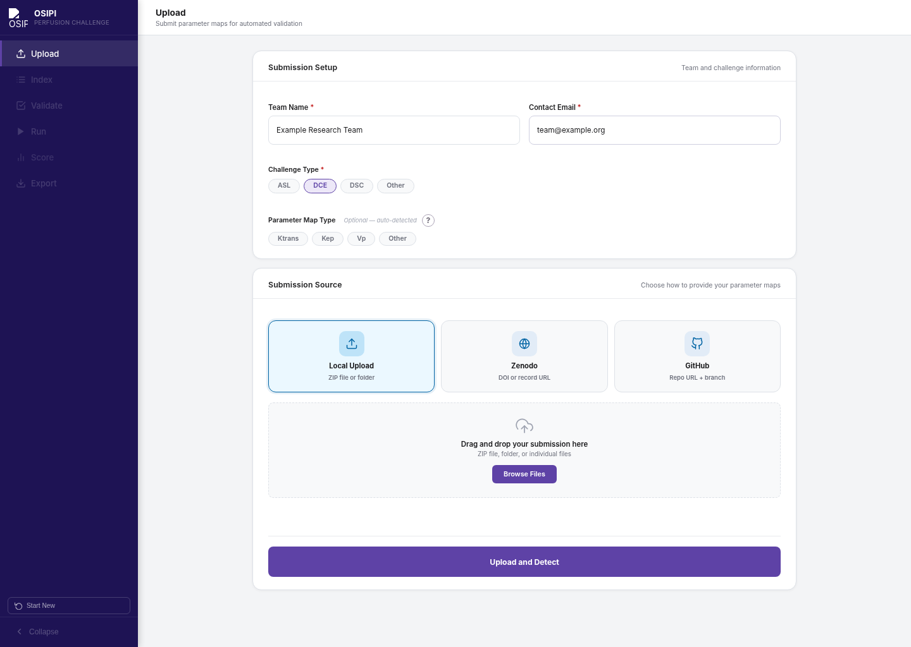
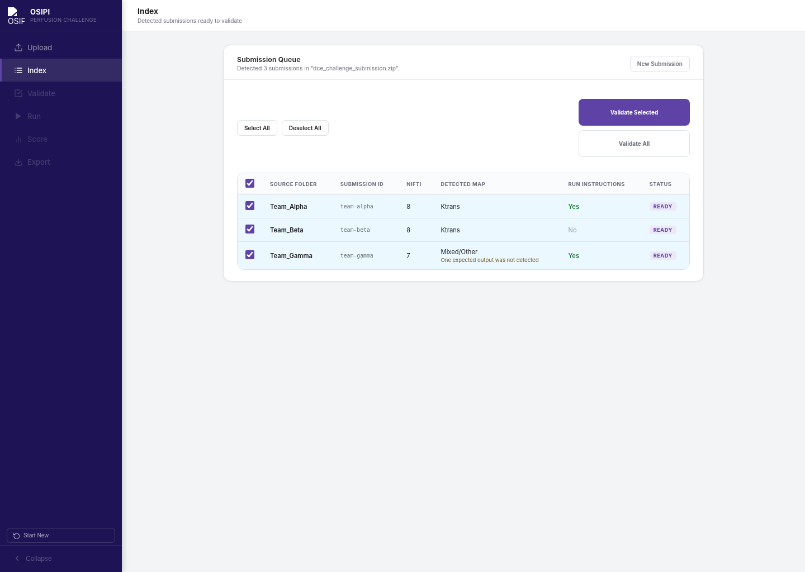
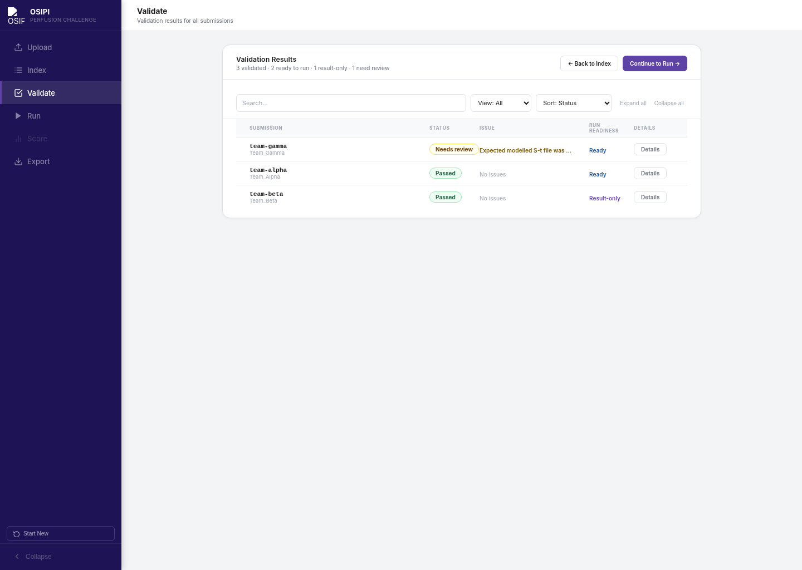
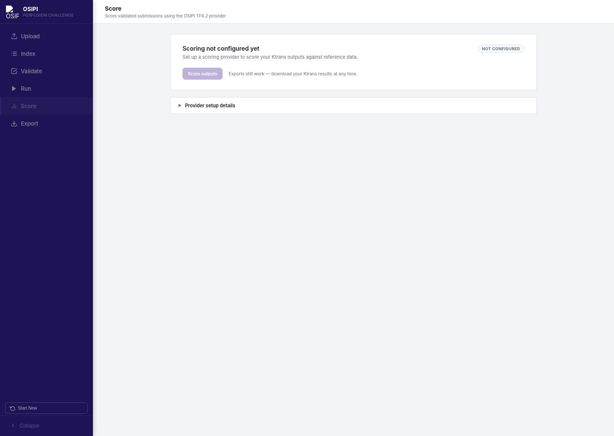
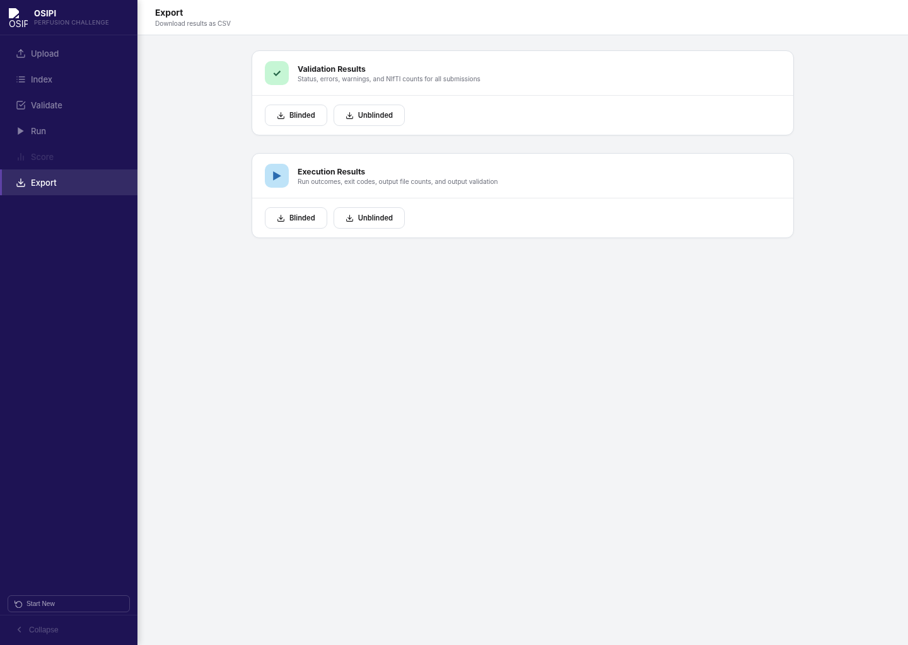

Google Summer of Code 2026 · OSIPI
Perfusion challenge submission pipeline
A local web application for importing, validating, running, reviewing, and exporting ASL, DCE, and DSC perfusion-imaging challenge submissions.
Current project status
The technical submission workflow is operational. The remaining work is mainly the final scientific definition and integration of challenge-specific metrics.
config/validation_rules.yaml; scoring packages are uploaded, not coded.
No invented scores
The application should only report official challenge metrics after the formula, reference data, masks, and grouping rules have been supplied or approved by OSIPI.
Pipeline workflow
The interface keeps the submission lifecycle visible and separates file checks, execution, scientific comparisons, and exports.
1
Upload
Import a ZIP, local folder, GitHub repository, or Zenodo record.
2
Index
Review detected files, map types, metadata, and submission structure.
3
Validate
Check required files, filenames, NIfTI integrity, and challenge rules.
4
Run
Run reproducible submissions in Docker, or skip execution for result-only packages.
5
QC & Preview
Review generic QC and reference comparisons when a provider is available.
6
Export
Generate structured JSON, CSV, HTML, and PDF outputs for review.
Interface gallery
These screenshots are rendered from the current frontend with demonstration data. Click an image to enlarge it.





Run locally
Docker Desktop is the simplest supported way to run the current web application.
Clone the repository
Download the project and move into its root folder.
Build and start
Use Docker Compose so the backend and frontend run with consistent dependencies.
Open the application
Visit http://localhost:8000, then upload a demonstration submission.
Terminal
git clone https://github.com/ralkhleef/osipi-perfusion-pipeline.git
cd osipi-perfusion-pipeline
docker compose build --no-cache
docker compose up -d
# Open http://localhost:8000
# Stop later with:
docker compose downSubmission support
Precomputed maps
Use this when a participant submits completed NIfTI outputs and a methods document without runnable code.
Code plus Docker
Use this when a participant supplies code, a Dockerfile or Compose file, and instructions that generate outputs locally.
Current direction
Ktrans is mandatory; vp, ve, and Kep may be optional. Modelled S–t and a methods document are expected for the 2026 challenge design.
Current direction
Perfmap/CBF and ATTmap naming is recognized. Reference-map comparison is supported at a general level; final challenge metrics remain configurable.
Configuration guide
Configuration is currently code-based. There is not yet one central YAML file controlling every challenge. The table below shows the real edit points in this repository.
| What changes | Current file | What to edit |
|---|---|---|
| Required and optional parameter maps | config/validation_rules.yaml | challenges.<id>.required_maps and optional_maps |
| Required non-map artifacts | config/validation_rules.yaml | challenges.<id>.required_artifacts and the artifact_types block |
| Expected dataset structure | config/validation_rules.yaml | challenges.<id>.datasets — participants, repeats and sites |
| Map names, labels and units | config/validation_rules.yaml | The map_types block: patterns, display, units, dimensions |
| Filename identity parsing | config/validation_rules.yaml | challenges.<id>.filename_identity_patterns |
| Official scoring script and metrics | A scoring package | manifest.json, uploaded through Scoring Setup — no code edit |
| Reference data and mask locations | backend/services/path_config.py | Provider and output directory constants |
| Participant execution command | run_config.json inside a submission | command and optional timeout_seconds |
Example: recognise a new map filename
Add aliases under map_types. This changes detection and labelling only; it does not create a scientific metric.
config/validation_rules.yaml
map_types:
ktrans:
display: Ktrans
label: Volume transfer constant
units: min^-1
dimensions: 3
patterns:
- ktrans
- k_trans
- transfer_constant # add further aliases hereExample: change what a challenge requires
Requirements are enforced from this file. Making ve mandatory is a one-line change, and no Python is edited.
config/validation_rules.yaml
challenges:
dce:
required_maps:
- ktrans
- ve # moved up from optional_maps
optional_maps:
- vp
- kep
required_artifacts:
- modelled_st # 4-D, checked against the NIfTI header
- methods
datasets:
synthetic:
participants: # null = not yet decided by OSIPI, so not checked
repeats: 2
sites: 3
clinical:
participants: 5
repeats: 2
sites: 1A missing required map or artifact becomes a blocking error, an optional map is not reported, and the dataset grid is checked against each scan’s resolved participant, repeat and site. Unknown keys are rejected at load time, so a typo fails loudly instead of being silently ignored.
Example: change a reproducible run command
A participant can include this file at the top level of their submitted package.
run_config.json
{
"command": ["python", "run.py", "--input", "/input", "--output", "/output"],
"timeout_seconds": 1800
}
How far the configuration reaches
Challenge requirements, map names, units, dataset structure and identity parsing are loaded from
config/validation_rules.yaml at runtime and are validated on load. Scoring scripts and their metric lists arrive as uploaded packages with their own manifest.json. What still requires a code change is a genuinely new kind of check or a new statistical formula — the schema describes structure, not mathematics.
Add or change a scoring provider
A provider connects one challenge and map type to an approved script, reference data, masks, and an explicit list of metrics.
Create a provider folder
Place the approved scoring script, hidden reference data, and masks under data/scoring/providers/<provider_id>/. Do not commit private challenge data to a public repository.
Describe it in a manifest
Add manifest.json beside the script with the package id, challenge type, entry point, call mode, and the explicit list of metrics it returns. Mark "official": false for anything that is not approved OSIPI scoring.
Adapt the script safely
Map pipeline output folders to the script’s expected input structure and capture its real artifacts. Never fabricate missing metric values.
Add focused tests
Test provider discovery, missing-data behavior, output parsing, and each approved metric formula with small controlled fixtures.
Update reports and documentation
Expose only the metrics returned by the provider and describe the exact grouping level, units, masks, and limitations.
manifest.json
{
"package_id": "osipi_dce_ktrans",
"name": "Approved DCE Ktrans scoring",
"version": "1.0.0",
"challenge_type": "dce",
"map_type": "ktrans",
"entry_point": "scoring.py",
"call_mode": "standard",
"official": true,
"metrics": ["approved_metric_1", "approved_metric_2"]
}Upload the package through Scoring Setup in the application and select it as active for the challenge. No Python file is edited to register it, and the pipeline reports only the metrics the manifest declares.
Scoring packages run as code
A package is Python that executes on the server. Only trusted reviewers should upload one, and the script should be read before it is installed.
Scientific requirements from the latest review
The meeting notes are organized here so confirmed requirements are not mixed with ideas that still need a formal definition.
DCE and ASL inputs
- DCE: Ktrans required; vp, ve, and Kep optional.
- DCE: modelled S–t as a 4D NIfTI and a methods document.
- Synthetic and clinical data remain part of one submission.
- Organizer-provided ROI masks may remain hidden during evaluation.
- ASL recognizes Perfmap/CBF and ATTmap outputs.
Metric integration
- ROI summaries for Ktrans and ASL maps.
- Residual or RSS comparison between measured and modelled dynamic signals.
- Variation across participants, repeats, and sites.
- Clear individual metrics and plots rather than an invented universal pass/fail score.
Exact definitions
- Accuracy formula: bias, RMSE, absolute error, percentage error, or another definition.
- Exact RSS/deviance formula and aggregation.
- Whether grouped statistics use voxel values, scan-level ROI medians, or both.
- Paired repeat/site analysis and the ICC model, if ICC is required.
- Final number of participants, repeats, sites, methods sections, and formal thresholds.
Implementation rule
Before adding a metric, record its formula, input units, mask, aggregation level, pairing rule, missing-data behavior, and expected output field. A metric name by itself is not enough to reproduce scientific scoring.
Configuration walkthrough
This short captioned video shows where submission rules, provider definitions, reference paths, and GitHub Pages deployment are changed. A narration script is included for recording a voiced version.
Publish the documentation with GitHub Pages
The repository includes a Pages workflow that uploads the static docs/ folder. No documentation build dependency is required.
- Review the repository for private submissions, patient data, hidden references, credentials, and generated runtime outputs before pushing.
- Commit the documentation, screenshots, video, and
.github/workflows/pages.yml. - Push the
mainbranch to GitHub. - In repository Settings → Pages, choose GitHub Actions as the source.
- Open the Actions tab and confirm the “Deploy documentation” workflow succeeds.
- Use the Pages URL in the repository description and final GSoC submission.
Terminal
git add README.md docs .github/workflows/pages.yml GITHUB_PUBLISHING_CHECKLIST.md
git commit -m "Add project documentation site"
git push origin mainCurrent limitations
Scientific formulas are not all final
The documentation distinguishes confirmed requirements from open decisions. Do not label provisional comparisons as official challenge scores.
Configuration is distributed
Submission rules and provider settings currently live in Python modules. A central reviewed YAML schema would simplify future maintenance.
Reference data may be private
Hidden masks, clinical data, and organizer-owned references should be mounted or installed securely and excluded from the public Git repository.
Reports reflect available providers
JSON, CSV, HTML, and PDF exports can only include metrics that were actually computed by an enabled provider.